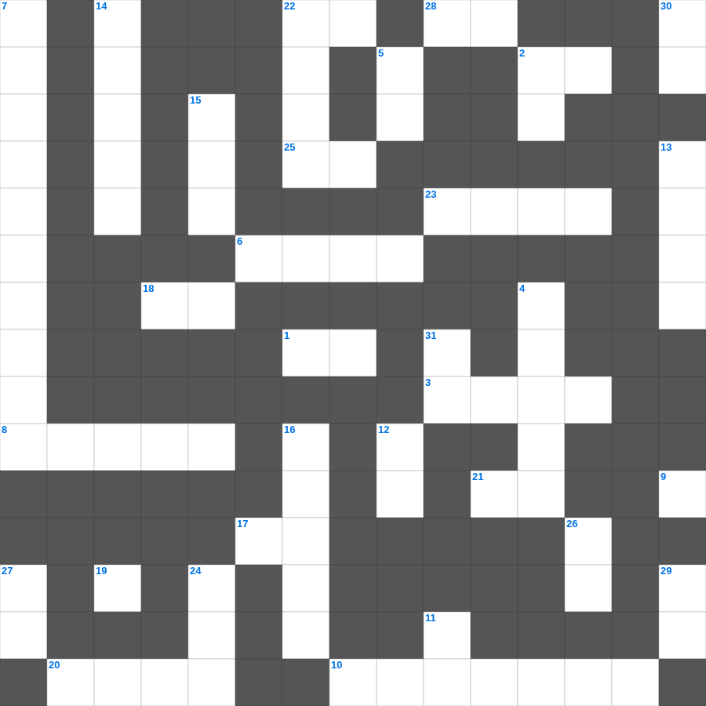

사도행전: 성령의 임재
오늘은 사도행전의 주요 내용을 담은 사도행전 성경 퀴즈 문제를 준비했습니다. 총 35개의 힌트가 있으며, 주일학교 교재나 성경공부 자료로 활용하기 좋습니다. 무료로 즐기는 사도행전 가로세로 퍼즐을 지금 바로 풀어보세요!

📝 가로 힌트
1. 땅의 짐승과 기는 것(여섯째 날)
2. 땅 끝까지 이르러 내 이것이 되리라
3. 천사 가브리엘이 마리아에게 예수 탄생을 알림
6. 발람의 나귀가 말을 한 기적
8. 떨기나무 불꽃 가운데서 모세가 들은 음성
10. 선한 사람이 강도 만난 자를 도와준 이야기
17. 보이지 않는 것들의 실상이요 바라는 것들의 증거
18. 성령의 9가지 열매 중 세 번째
19. 가인이 아벨을 죽인 도구(전통적 해석)
20. 포기하지 아니하면 때가 이르매 이것으리라
21. 성령의 9가지 열매 중 두 번째
22. 내가 누구를 보내며 누가 우리를 위하여 이것할꼬
23. 향유 옥합을 깨뜨려 발을 닦은 것
25. 영접하는 자 곧 그 이름을 믿는 자들에게는 하나님의 이것이 되는 권세를 주셨으니
28. 주 예수를 믿으라 그리하면 너와 네 집이 이것을 받으리라
📝 세로 힌트
2. 네 이웃에 대하여 거짓 이것하지 말라
4. 여호수아가 성을 돌자 무너진 사건
4. 이스라엘 백성이 요단강을 건너 처음 도착한 성
5. 마음이 가난한 자가 받는 복
7. 벽에 나타난 글자를 해석한 다니엘
8. 너는 나 외에는 다른 이것들을 두지 말라
9. 분향단에서 피우는 거룩한 것
11. 멜리데 섬에서 바울을 문 동물
12. 다윗이 골리앗을 쓰러뜨린 무기
13. 하나님이 만드신 최초의 낙원
14. 기브온 족속이 여호수아를 속이려 가져온 것
15. 예수님이 제자들의 발을 씻기신 일
16. 베드로가 예수님을 모른다고 세 번 부인한 후 들린 소리
22. 모세가 발견된 상자
24. 이스라엘의 유일한 여성 사사
26. 예수님은 우리의 영원한 이것(길, 진리, 이것)
27. 예수님이 율법의 완성이라고 하신 것
29. 사랑받는 제자로 불린 사람
30. 누구든지 주의 이름을 부르는 자는 이것을 받으리라
31. 유대인의 왕, 나사렛 이것
🏷️ 키워드
사도행전 성경 퀴즈 문제, 사도행전, 십자가로세로, 성경퀴즈, 말씀퀴즈, 가로세로퍼즐